旋轉世界：各國陀螺文化與科學
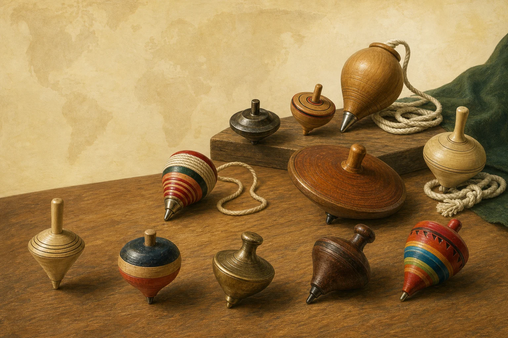
SPINNING TOPS AROUND THE WORLD
一顆陀螺，
轉出科學與文化。
一顆小小的陀螺，為什麼能站著旋轉？世界各地又發展出哪些不同玩法？
LEARNING MISSION · 40–50 MIN
先帶著問題出發
這不是一場背名詞的旅行。你要找出位置、方向與證據，調整變因，最後用一張圖解釋「陀螺怎麼從站穩到倒下」。
辨識構造
找出旋轉軸、重心、接觸點與本體。
解釋運動
用角動量、力矩、進動與阻力連起因果。
比較設計
觀察材料、質量分布、軸心與轉速的影響。
安全操作
按正確順序檢查、投擲、等待與回收。
01 · PHYSICS OF SPIN
旋轉不是抵消重力，
而是改變傾倒的方式。
快速旋轉的陀螺具有角動量。重力造成的力矩會改變角動量的方向，軸線因此進動；阻力讓轉速逐漸降低，最後才倒下。
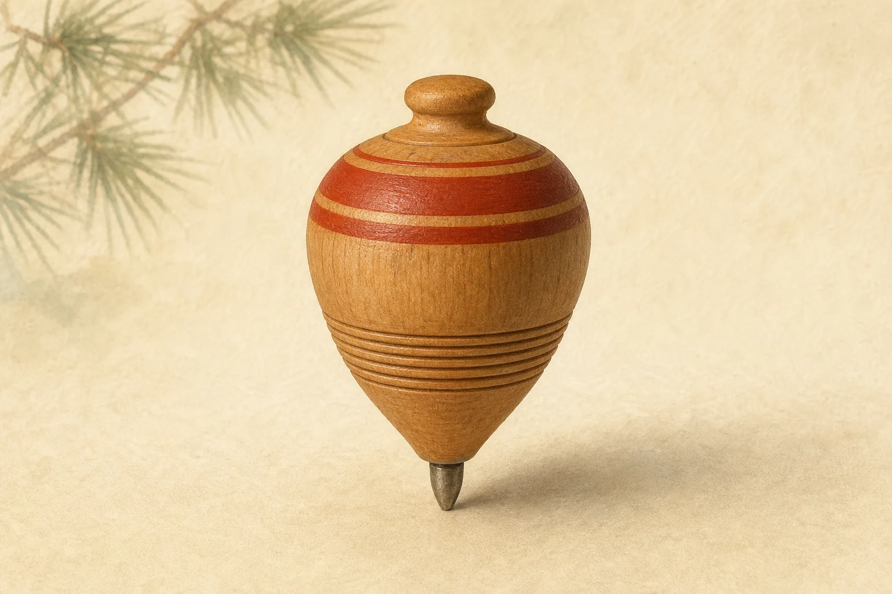
- 構造握柄、本體與陀螺釘握柄便於啟動；本體承載主要質量；短鈍金屬尖端把運動集中到很小的接觸區。
- P接觸點地面支撐力與接觸摩擦作用的位置，也是計算重力力矩時選用的支點。
- C重心可把整顆陀螺的重力視為集中作用在此。均勻且對稱的陀螺，重心通常位於對稱軸上。
- ω角速度表示陀螺繞自身旋轉軸轉動的快慢與方向；方向依右手定則決定。
- I轉動慣量與質量分布I = Σmρ²；質量離旋轉軸越遠，對轉動慣量的貢獻越大。
- L角動量對接近軸對稱且快速自旋的陀螺，可近似寫成 L ≈ Iω，方向大致沿旋轉軸。
- mg重力在重心 C 向下作用。重力沒有被旋轉抵消，陀螺仍持續受到地球吸引。
- N地面支撐力由接觸點 P 大致向上；只有在鉛直加速度很小時，大小才可近似與重力平衡。
- f接觸摩擦方向反抗接觸點的相對滑動，不一定固定向左或向右；它也會耗散部分機械能。
- r力臂向量從接觸點 P 指向重心 C。陀螺傾斜後，r 與重力不在同一直線上。
- τ重力力矩τ = r × mg；此圖向左傾斜，因此力矩指向紙面外，主要改變 L 的方向。
- Ω進動軸線繞鉛直方向移動。快速且近似穩定進動時，可定性理解為 Ω 約與 τ／L 同量級。
自旋L ≈ Iω
力矩τ = r × mg
方向改變dL／dt = τ
讀圖提醒：圖示箭頭呈現作用位置與方向，長度不代表實際數值。若陀螺完全直立且 C 正好位於 P 上方，重力對 P 的力矩為零；傾斜後才出現圖示的力臂與重力力矩。查看力學來源 →
ONE TOP · SIX CLUES
把六個概念，放回同一顆陀螺。
沿著編號觀察：旋轉軸與角動量指出方向；重力造成力矩，軸線因而進動；摩擦耗散能量，外圍質量分布則影響轉動慣性。
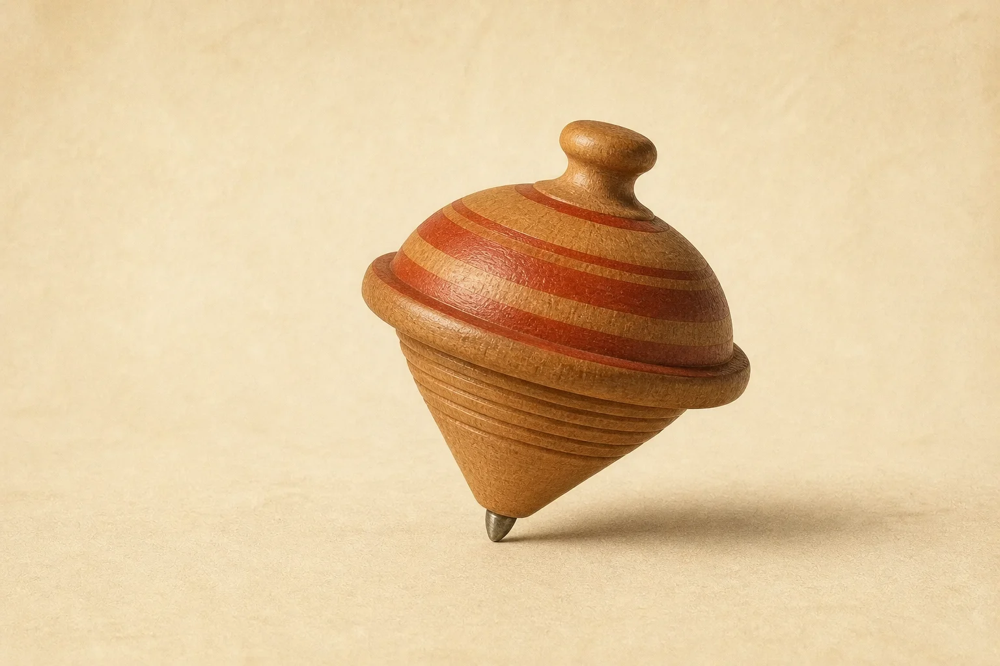
- 1旋轉軸穿過陀螺本體與尖端的想像直線。
- 2角動量方向大致沿旋轉軸；轉得快時不容易快速改變。
- 3重力與力矩重心和接觸點錯開，重力便對支點產生力矩。
- 4進動力矩改變角動量方向，使傾斜軸線繞圈。
- 5摩擦尖端與地面摩擦會耗散能量，使轉速下降。
- 6質量分布質量離軸較遠時，轉動慣性通常較大。
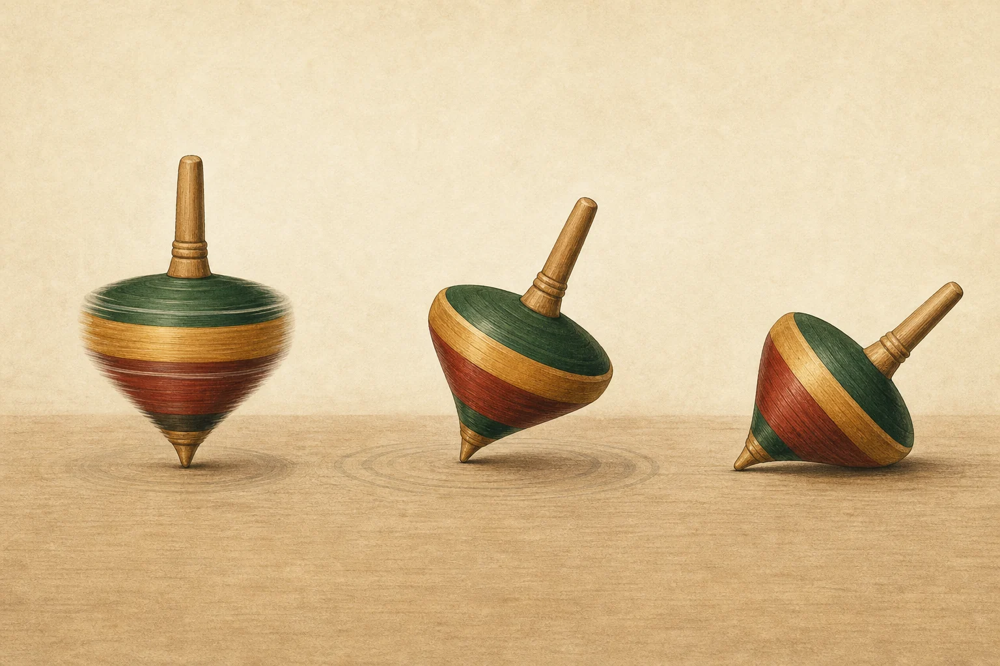
- 1
高速：方向難改變
角動量較大，短時間內軸線方向不容易被大幅改變。
- 2
傾斜：力矩造成進動
重力沒有消失；它對支點產生力矩，使軸線沿圓錐路徑移動。
- 3
減速：晃動加劇
摩擦與空氣阻力耗散能量，進動變明顯，最後無法維持旋轉姿態。
INTERACTIVE LAB
改一個變因，
看穩定性怎麼變
這是定性模型，用來比較趨勢，不是精密預測真實陀螺的秒數。
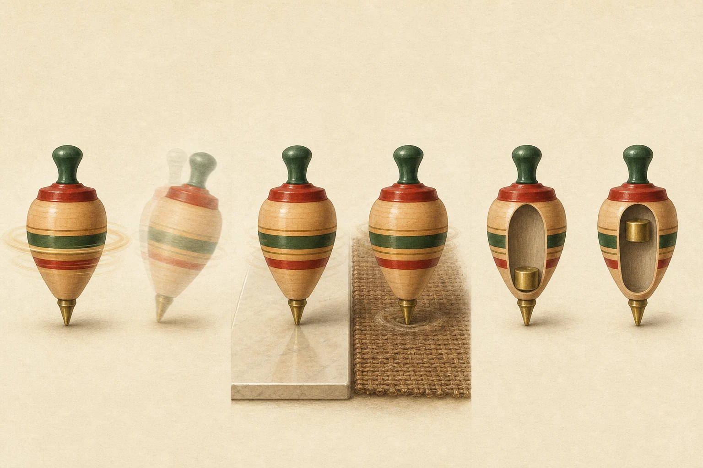
準備完成：調整滑桿後按播放。
預測：較高轉速、較低摩擦與較低重心，通常更有利於維持穩定。
02 · TOPS IN TAIWAN
從木工餘料，
轉成共同記憶。
臺灣早期常用生活周遭材料製作童玩。大溪的木器工藝與社區活動，讓大型木陀螺成為醒目的地方文化；學生操作仍應選用合適尺寸。
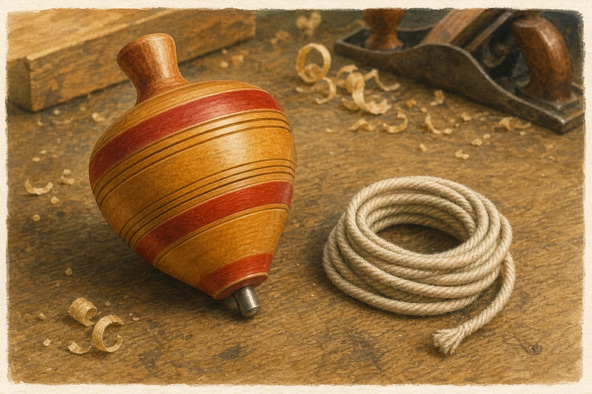
TAIWAN MEMORY
「干樂」與「釘干樂」
政府童玩資料記錄，陀螺在臺灣也有「干樂」的稱呼；以陀螺撞擊、比速度與準度的玩法，臺語常稱「釘干樂」。名稱與規則會隨地方、世代而不同。
大溪的陀螺文化和木器工藝緊密相連，現代活動包含工藝示範、彩繪、教學與競賽。
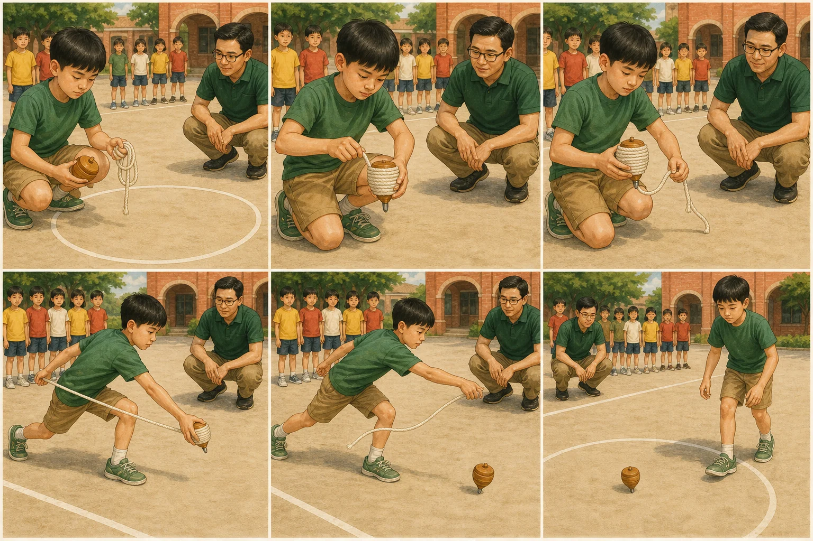
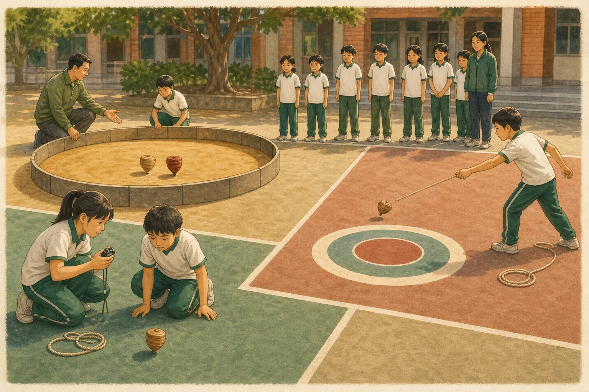
03 · WORLD ATLAS
原理相通，
造型與玩法並不相同。
「國家」只是方便閱讀的入口；實際傳統往往跨越地區、語言與社群。點選卡片，比較材料、啟動方式和代表玩法。
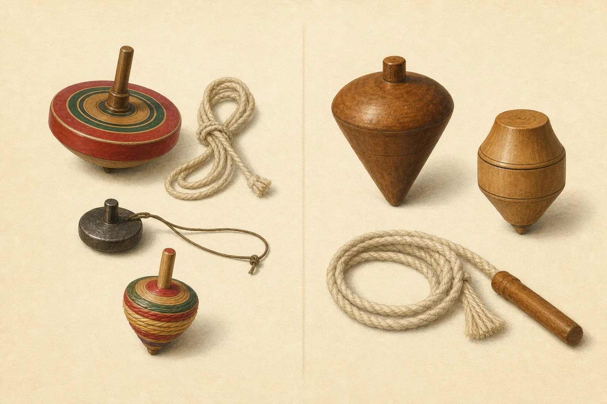
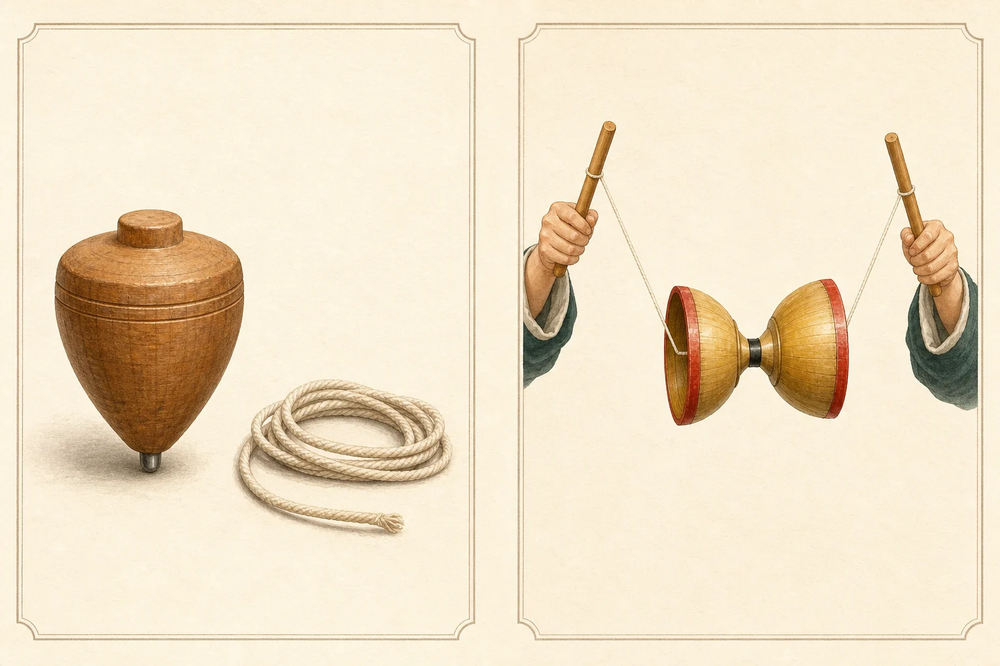
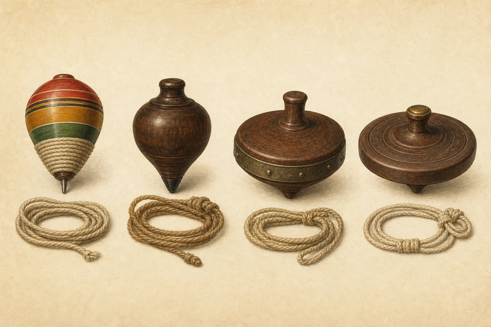
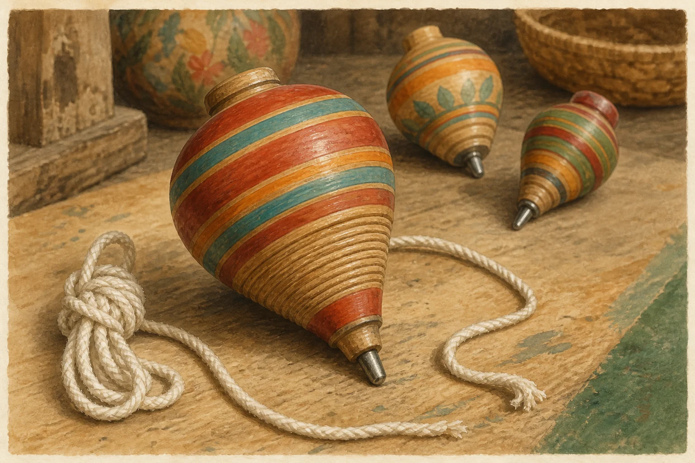
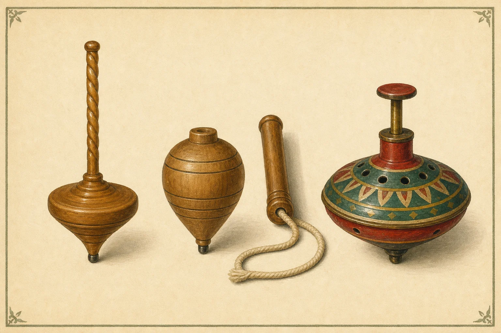
04 · SAFE OPERATION
先畫好界線，
才讓陀螺越界。
真正熟練的人不只會投擲，也會檢查器材、觀察周圍、等待陀螺停穩，並照顧所有人的安全。
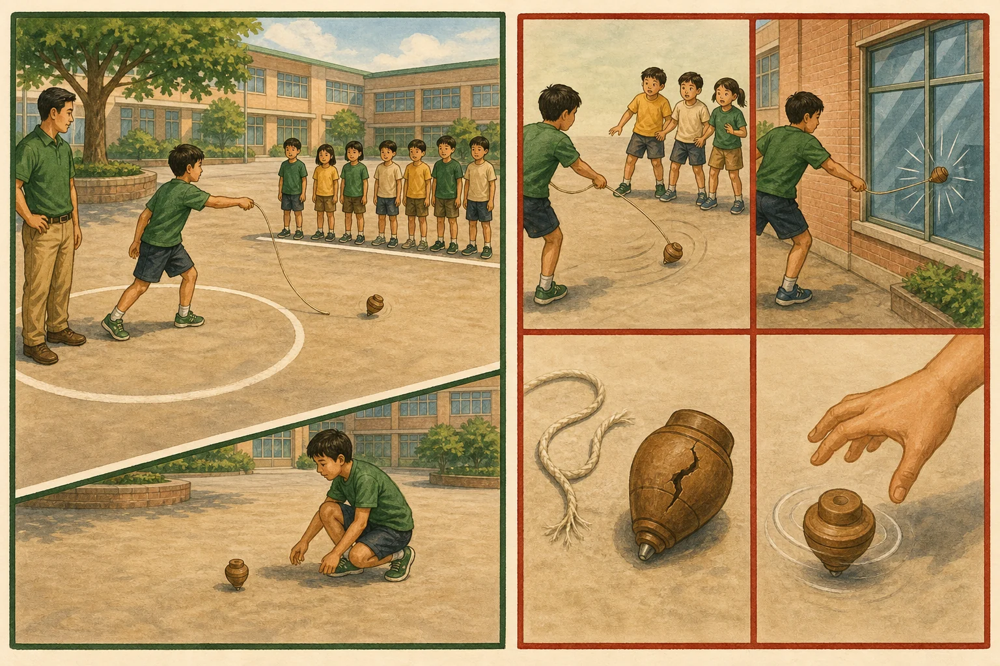
SIX SAFE MOVES
看圖完成六步驟
先看每格的手勢、繩路與人物位置，再到下方把操作順序排正確。圖中等待者始終站在線後，投擲者前方保持淨空。
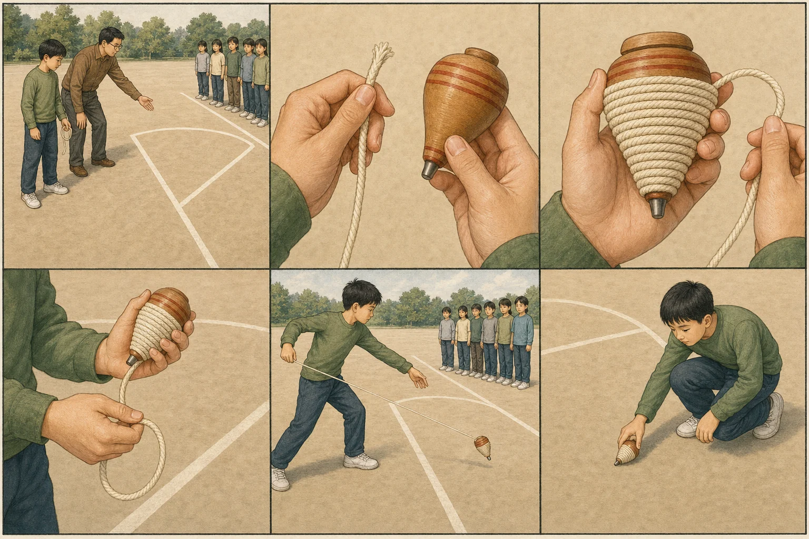
1 清空投擲區畫出等待線；前方不能有人、玻璃、車輛或易碎物。2 檢查器材繩索、木身或尖端出現破損與鬆動，就先停用。3 從尖端向上纏繩線圈貼緊、不交叉，並保留足夠的自由繩端。4 穩定握持控制陀螺與繩尾，身體朝向已清空的投擲區。5 投擲並抽繩朝前下方放手、向後抽繩；不可朝人或易碎物投擲。6 停穩再回收確認陀螺不再轉動，也沒有人正在投擲，才跨線撿回。
ORDER THE STEPS
排出安全操作六步驟
依序點選；也可按 Tab 移動，按 Enter 加入。選錯可以復原或重設。
清空扇形區
投擲者前方、側前方都不能有人、玻璃、車輛或易碎物。
檢查繩、釘、本體
繩索毛裂、尖端鬆動或木身破裂，都先停用。
一組一組操作
旁觀者站在等待線後；大型陀螺由成人或熟練者示範。
停穩才回收
不要徒手抓高速陀螺，也不要跨進仍有人投擲的區域。
05 · VISUAL CHALLENGE
不是背答案，
是找出最有力的證據。
八題涵蓋原理、變因、文化比較、構造與安全情境。作答後立刻查看解析，也能回到對應教材。
第 1／8 題
0 分
06 · KEEP EXPLORING
把好奇心，
轉向可靠的來源。
這些資源來自政府、博物館與大學。每一筆都說明適合對象與可學內容，不只丟下一串網址。
SOURCE LITERACY
圖像幫助理解，
來源幫助判斷。
本教材的文化圖像由 Image 2.0 生成，不是文物照片，也不能取代器物鑑定。歷史、名稱與玩法以機構資料為依據，遇到起源爭議時不做唯一化宣稱。
閱讀完整來源與查核紀錄 →